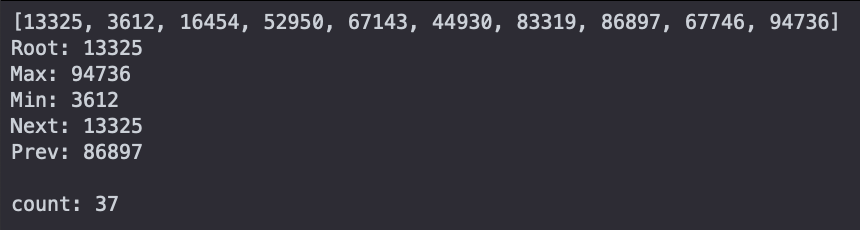
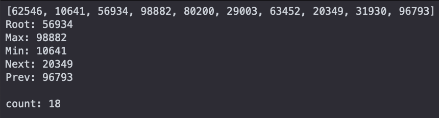

- a) Properties of a BBST
- Each node has a maximum of two children
- The left subtree (all of the nodes coming from and including the left child) must be smaller than the root node
- The right subtree (all of the nodes coming from and including the right child) must be greater than the root node
- A self balancing tree to keep worst case to O(logn) for all operations
- Keeps the absolute value of the balance factor at or less than 1
- b) Where n = number of nodes in BBST
- i. Insert – O(logn)
- Balancing tree takes constant time
- ii. Delete – O(logn)
- Balancing tree takes constant time
- iii. Find-next – O(logn)
- iv. Find-prev – O(logn)
- v. Find-min – O(logn)
- vi. Find-max – O(logn)
- c)
recursiveAVL.py✓
- i. Create functions of a Binary Search Tree that implement the algorithms recursively.
- ii. Input is valid and are integers, and integers are from range -999999 to 999999. There are also no duplicate numbers.
- iii. Test Cases
- Input:
[2428, 3147, 3222, 30, 7195, 5620, 5934, 2976, 1245, 5021]
- Output:
Root: 2428
Max: 7195
Min: 30
Next: 1245 (Where input is minimum node)
Prev: 5934 (Where input is maximum node)
- iv.
- v. I use a max/min integer to check the minimum and maximum of the tree. Input must be greater than/less than for algorithm to work.
- vi.
recursiveAVL.py
- vii. Use a different way of comparing for max and min in the tree.
d) iterativeAVL.py✓
- i. Create functions of a Binary Search Tree that implement the algorithms iteravely.
- ii. Input is valid and are integers, and integers are from range -999999 to 999999. There are also no duplicate numbers.
- iii. Test Cases
- Input:
[6668, 8170, 4097, 2130, 4539, 3772, 482, 8277, 8952, 8451]
- Output:
Root: 6668
Max: 8952
Min: 482
Next: 2130 (Where input is minimum node)
Prev: 8451 (Where input is maximum node)
- iv.
- v. I use a max/min integer to check the minimum and maximum of the tree. Input must be greater than/less than for algorithm to work.
- vi.
iterativeAVL.py
- vii. Use a different way of comparing for max and min in the tree.
5. Constructing Trees
a) constructRecrusiveTrees.py✓
- b) Issues
- My program did not run into issues when running the program. An issue that may arise could possibly be a stack overflow error in the AVL tree because of the recursion that takes place.
c) constructIterativeTrees.py✓
6. Compare Implementations
a) Modified files to add counter.
b) Screenshots
- BST 
- AVL 
+
7. Extra Credit
a) Timed constructs